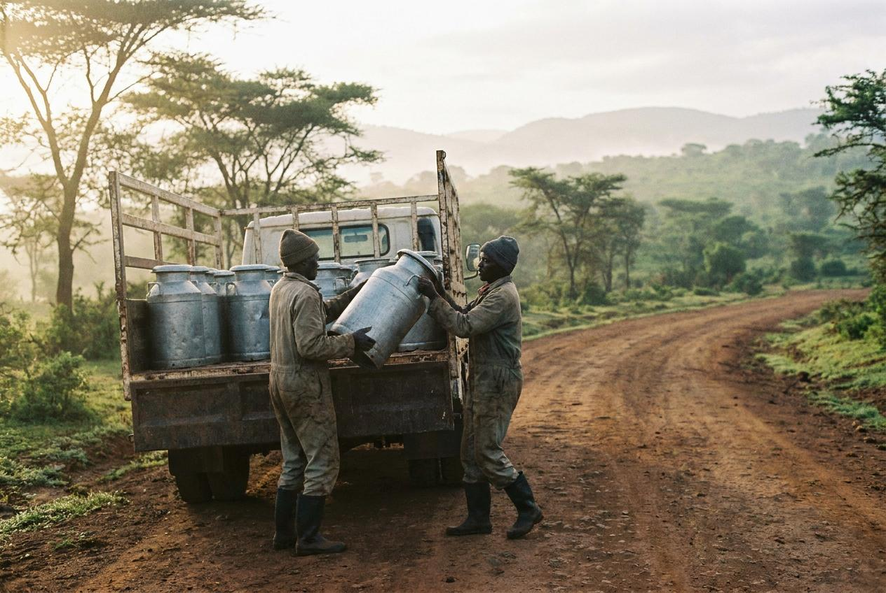

A farmer-owned movement built on trust
Ereteti Dairy Sacco began with a small group of farmers who wanted a fairer way to market their milk and receive payment without long delays. What started as a simple collection group grew into a dependable cooperative serving families across the Ngong area.
Today, the sacco handles deliveries on three routes, supports members with transparent payments, and keeps records that are easy to follow. The focus has always been on strong service, steady collection, and practical support for the farming community.
From a first cooler to a growing network
In the early years, operations were modest, with a small cooler, a ledger book, and daily commitment from members who wanted to improve their earnings. That early discipline is still visible in the way the sacco works today.

We started with nine farmers and one cooler. The ledger was a school exercise book.
Membership and service
Membership is open to farmers on our routes who meet the basic requirements for joining. We value reliable supply, honest records and a consistent standard of service for every member.
